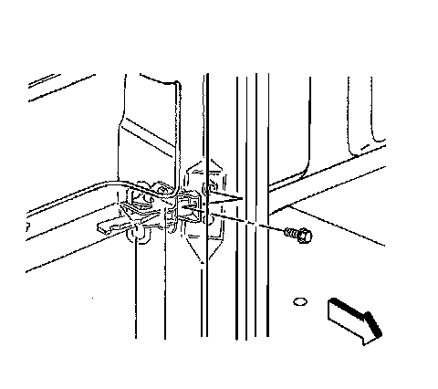

Rear Door Limiter: Service and Repair
Door Check Link Replacement
Removal Procedure
1. Open the door.
2. Remove the door trim panel. Refer to Front Side Door Trim Panel Replacement .
3. Remove the water deflector. Refer to Front Side Door Water Deflector Replacement .

4. Remove the body-side check strap bolt.
5. Remove the check strap plug.
6. Remove the door-side check strap nuts.
7. Pull the check strap from the inside of the door.
Installation Procedure
1. Install the check strap to the door.
2. Install the check strap to the body.
Notice: Refer to Fastener Notice in Cautions and Notices.
3. Install the check strap nuts.
Tighten the nuts to 9 N.m (80 lb in).
4. Install the check strap bolt.
Tighten the bolt to 25 N.m (18 lb in).
5. Install the water deflector. Refer to Front Side Door Water Deflector Replacement .
6. Install the door trim panel. Refer to Front Side Door Trim Panel Replacement .